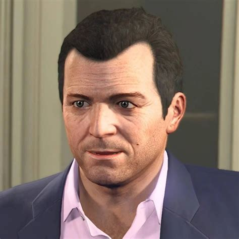
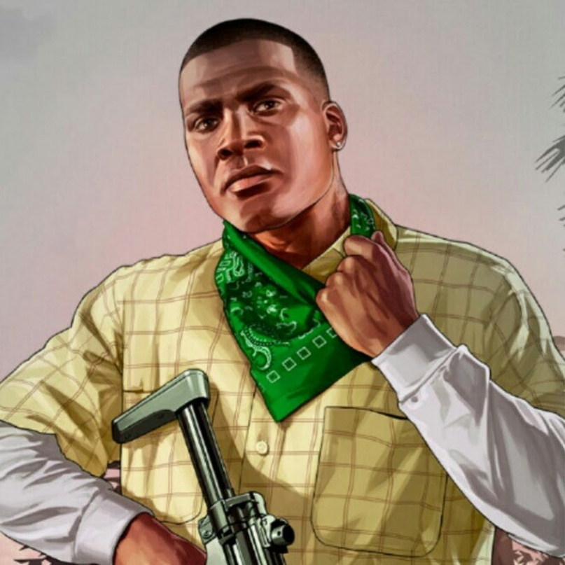
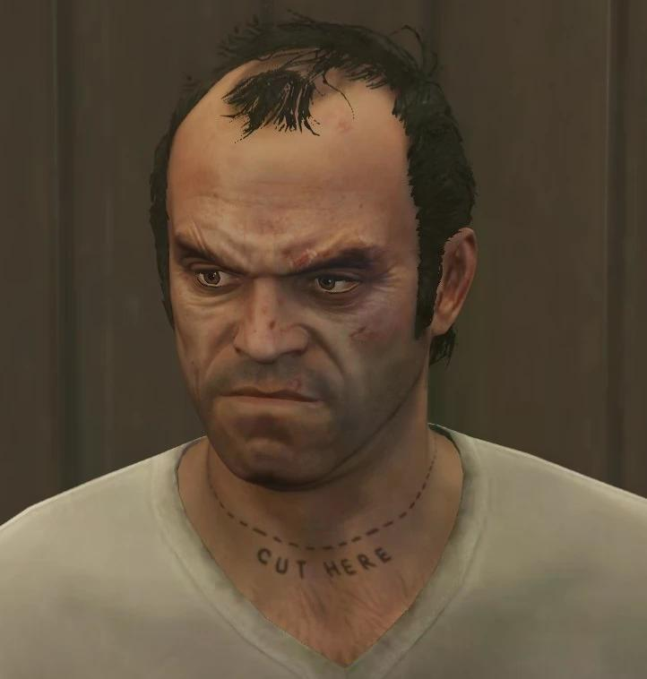
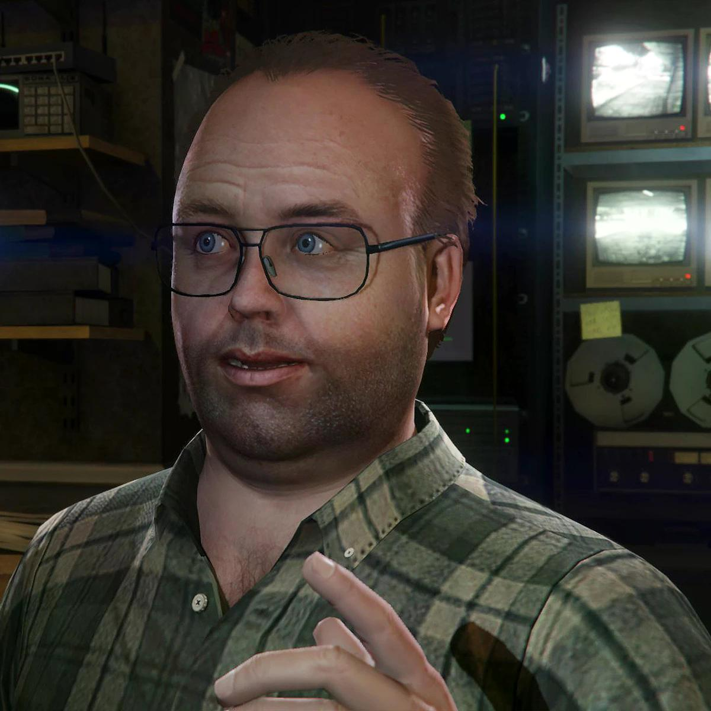
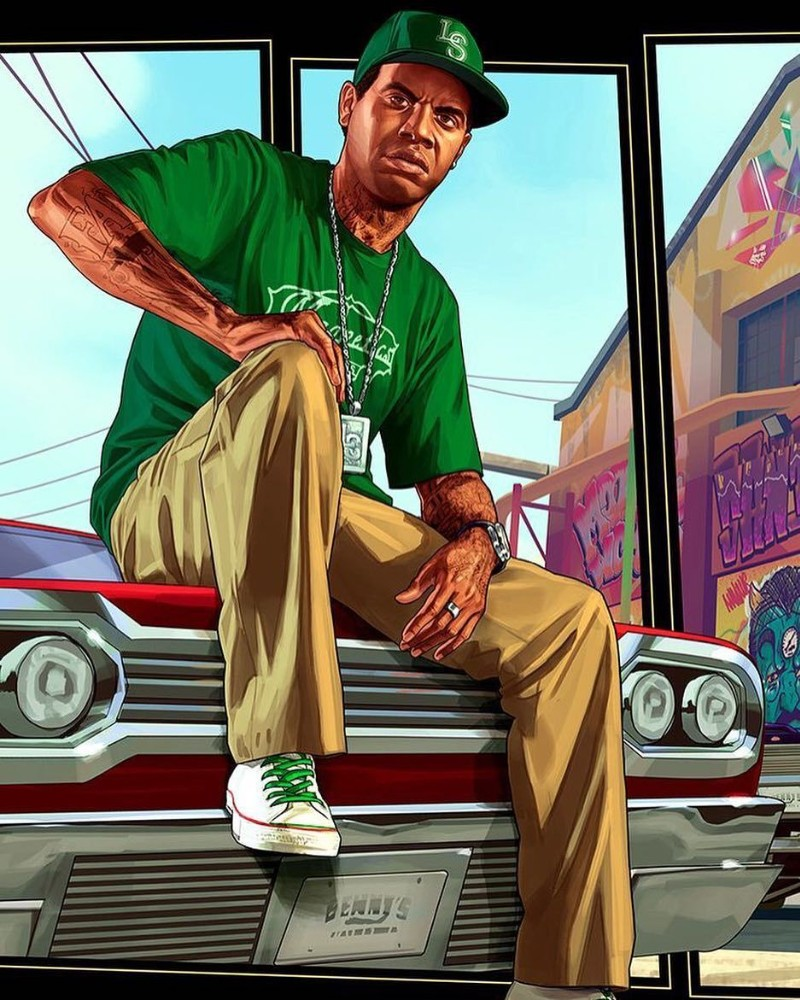

Главные персонажи GTA 5
Познакомься с героями игры поближе!

👤 Майкл Де Санта
Возраст: 45 лет
Роль: Бывший грабитель банков
Описание: Майкл — бывший профессиональный грабитель, который отошел от дел и живет с семьей в роскошном доме в Вайнвуде. Однако его спокойная жизнь оказывается под угрозой, когда старые дела напоминают о себе.
Любимое оружие: Пистолет .50, снайперская винтовка
Любимая машина: Obey Tailgater

👤 Франклин Клинтон
Возраст: 25 лет
Роль: Молодой репер и уличный парень
Описание: Франклин — молодой афроамериканец, работающий на автосалоне в Лос-Сантосе. Он мечтает о лучшей жизни и видит свой шанс в мире криминала, где он может проявить свои таланты.
Любимое оружие: Пистолет-пулемет, дробовик
Любимая машина: Buffalo S

👤 Тревор Филипс
Возраст: 42 года
Роль: Опасный психопат
Описание: Тревор — бывший военный летчик. Он живет в трейлере в пустыне Сэнди-Шорс и отличается непредсказуемым и жестоким поведением. Несмотря на это, он верный друг.
Любимое оружие: Топор, гранатомет
Любимая машина: Canis Bodhi

👤 Лестер Крест
Возраст: 55 лет
Роль: Планировщик ограблений
Описание: Лестер — бывший профессиональный преступник, который теперь передвигается на инвалидной коляске из-за полиомиелита. Он гениальный стратег и организатор, который планирует самые сложные ограбления в Лос-Сантосе.
Специализация: Организация ограблений, взлом систем безопасности
Интересный факт: Именно Лестер помогает главным героям с самыми прибыльными ограблениями в игре

👤 Ламар Дэвис
Возраст: 26 лет
Роль: Лучший друг Франклина
Описание: Ламар — лучший друг Франклина, работающий в том же автосалоне. Он всегда готов помочь другу, но часто попадает в неприятности из-за своего болтливого характера и склонности к авантюрам.
Особенности: Мастер импровизации, отличный водитель